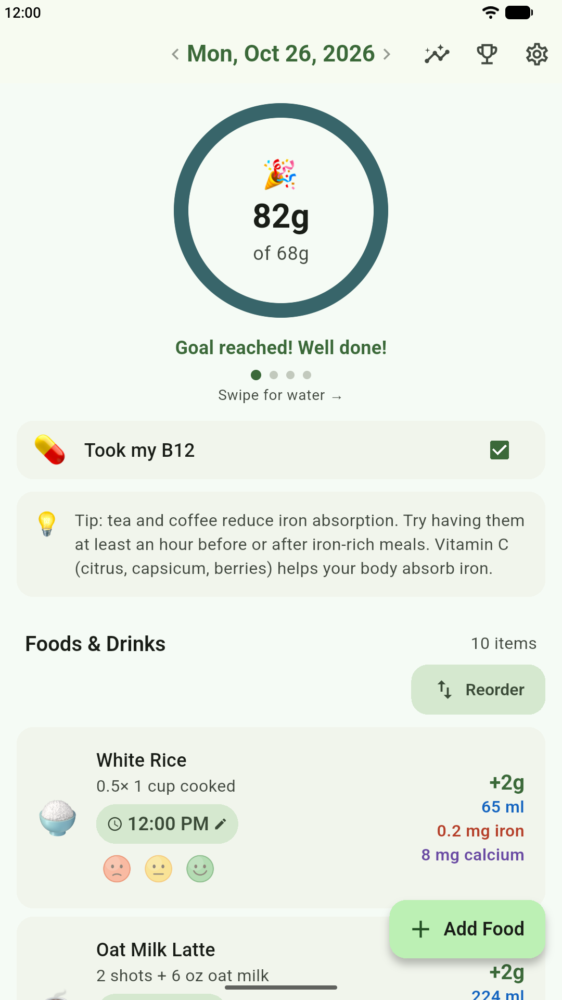
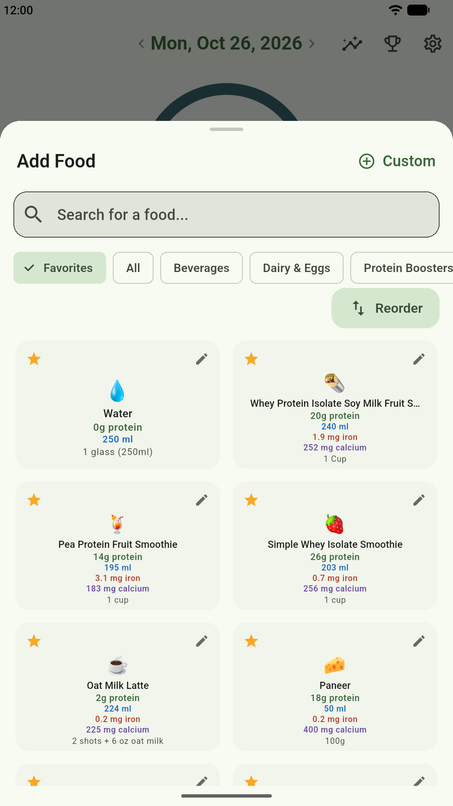
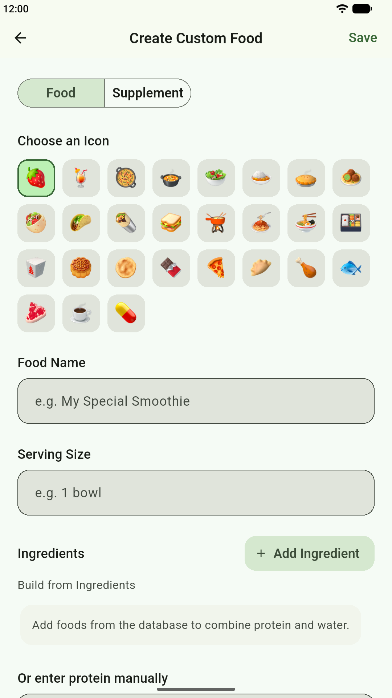
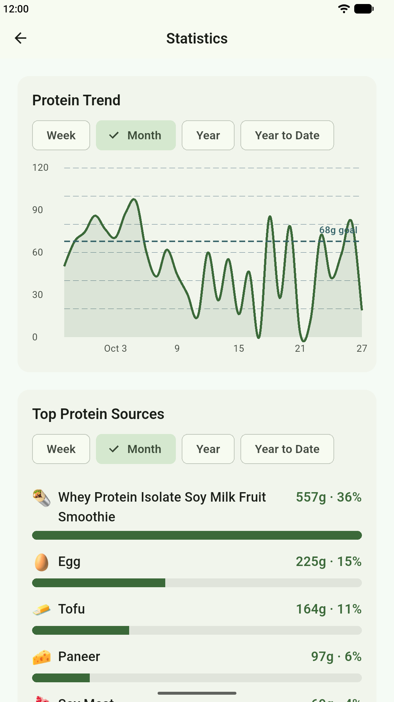
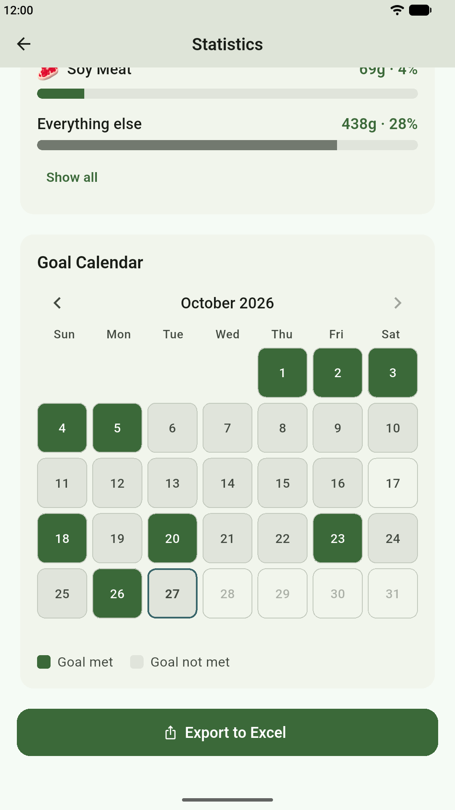
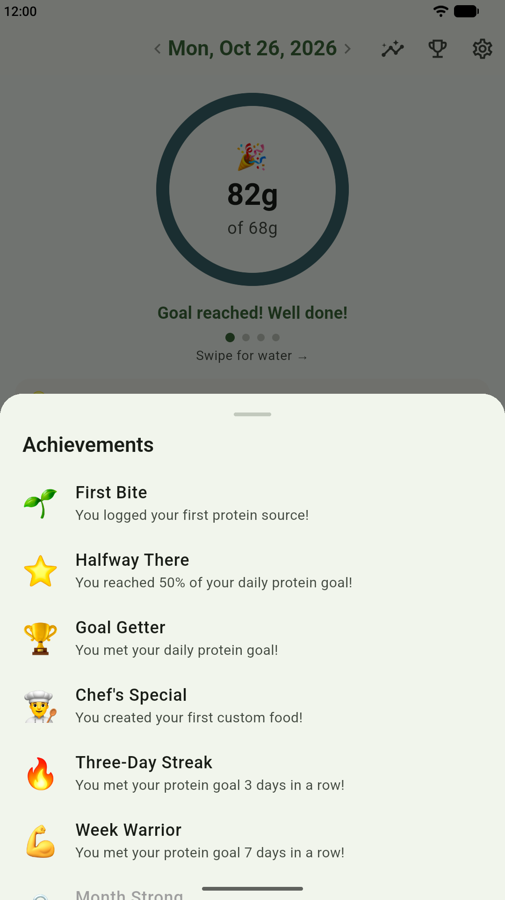

A Protein Ring That Fills Up as You Eat
The dashboard shows your progress toward today's protein goal in a single ring. Each food you log adds to the total, and when you reach your goal, a short celebration lets you know. Swipe the ring sideways to switch to water, iron and calcium, depending on which trackers you turn on in Settings.
- ✓ A daily protein goal you set yourself, such as the one your dietitian recommends
- ✓ Optional water, iron, calcium and vitamin B12 tracking
- ✓ Swipe the date to look back at previous days
- ✓ Note the time of each food and, if you like, how much you enjoyed it

Add a Food With a Single Tap
Open Add Food, find what you ate, and tap it. That's all it takes to log it. POHPS includes about 100 everyday vegetarian foods, each showing its protein, water, iron and calcium per serving, so you can see what a food contributes before you add it.
- ✓ Search by name, or browse categories such as Beverages and Dairy & Eggs
- ✓ Star the foods you eat most so they appear first under Favorites
- ✓ Food lists adapt to your diet: Lacto-Ovo, Vegan, Allium Vegetarian or Allium Vegan

Create Custom Foods From Your Own Ingredients
Have a favorite smoothie or a family recipe? Create it once and log it with a tap whenever you have it again. Build a food from ingredients in the database and POHPS adds up the protein and water for you, or enter the protein yourself from a nutrition label.
- ✓ Create as many custom foods and supplements as you need
- ✓ Pick an icon, a name and a serving size you'll recognize
- ✓ Combine ingredients, or type in protein values by hand

Statistics That Show Where Your Protein Comes From
The Protein Trend chart plots your daily intake against your goal line, so it's easy to see which days came up short. Below it, Top Protein Sources ranks the foods that contributed the most protein, with grams and a percentage for each.
- ✓ View by week, month, year or year to date
- ✓ See which foods do the most to help you reach your goal
- ✓ Use what you learn to plan your meals

A Goal Calendar for Every Month
Every day you reach your protein goal turns green on the Goal Calendar. A month of shaded days shows your streaks at a glance, and the gaps show where to focus next.
- ✓ Green for goal met, gray for goal not met
- ✓ Move between months to review your history
- ✓ Export your history to an Excel file to keep or share with your dietitian

Achievements That Mark Your Progress
Achievements unlock as you go, from logging your first food to reaching your goal 30 days in a row. Tap the trophy icon on the dashboard any time to see every achievement you've earned.
- ✓ First Bite, Halfway There and Goal Getter for your daily progress
- ✓ Chef's Special when you create your first custom food
- ✓ Streak achievements at 3, 7 and 30 days in a row